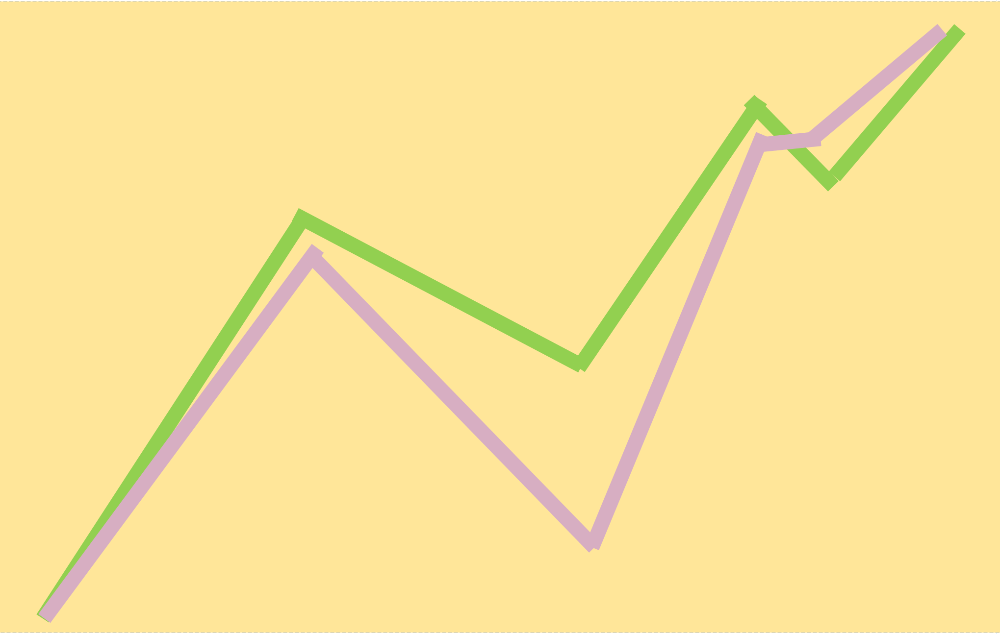

Algorithmic Trading
Algorithmic trading is a trading system that utilizes advanced and complex mathematical
models and formulas to make high-speed decisions and transactions in the financial markets. Algorithmic
trading involves the use of fast computer programs and complex algorithms to create and determine trading
strategies for optimal returns.
Benefits of Algorithmic Trading
- Traders executed at the best possible prices
- Instant and accurate trade order placement
- Reduced transaction costs
- Reduced risk of manual errors in placing the trades
- Simultaneous automated checks on multiple market conditions
Trading-Following
Simply follow market trends, with buy and sell orders generated based on a set of conditions
fulfilled by technical indicators. This strategy can also compare historical and current data
in predicting whether trends are likely to continue or reverse.
Mean Reversion
Operates under the assumption that markets are ranging 80% of the time. Black boxes that employ
this strategy typically calculate an average asset price using historical data and takes trades
in anticipation of the current price returning to the average price
News-Based
Hooked to news wires, automatically generating trade signal depending on how actual data turns
out in comparison to the market consensus or the previous data.
Abitrage
Making use of arbitrage in algorithmic trading means that the system hunts for price imbalances
across different markets and makes profits off those. Since the forex price differences are in
usually micropips though, you’d need to trade really large positions to make considerable profits.
Triangular arbitrage, which involves two currency pairs and a currency cross between the two, is
also a popular strategy under this classification.
